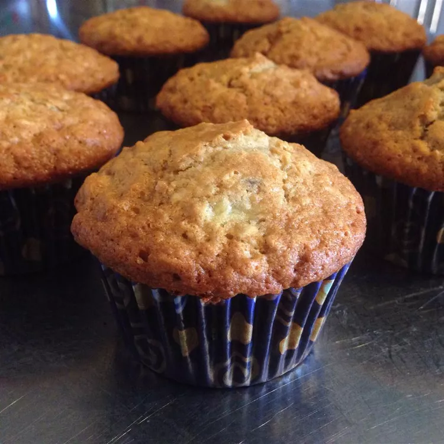

Banana Oat Muffins Recipe

Description
Ingredients
- 1 ½ cups all-purpose flour
- 1 cup rolled oats
- ½ cup white sugar
- 2 teaspoons baking powder
- ½ teaspoon salt
- 1 egg
- ¾ cup milk
- ⅓ cup vegetable oil
- ⅓ cup vegetable oil
Steps
- Preheat the oven to 400 degrees F (205 degrees C). Line a 12-cup muffin tin with paper liners.
- Combine flour, oats, sugar, baking powder, soda, and salt in a medium bowl; set aside.
- Beat egg lightly in a large bowl. Whisk in milk, oil, and vanilla. Stir in mashed bananas. Add the flour mixture and stir until just combined. Spoon batter into the prepared muffin cups, filling each 3/4 full.
- Bake in the preheated oven until tops spring back when lightly pressed, 18 to 20 minutes.
Nutrition Facts
Calories 200
Fat 8g
Carbs 30g
Protein 4g